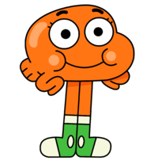

ГамболВики - Дарвин Воттерсон
Дарвин Уоттерсон

Дарвин Уоттерсон (англ. Darwin Watterson) или Дарвин Нептун Каспийский Посейдон Вольфстрим Баренцев Уоттерсон III (англ. Darwin Raglan Caspian Ahab Poseidon Nicodemius Watterson III) — один из главных персонажей мультсериала "Удивительный мир Гамбола". Когда-то он был обычной домашней рыбкой Гамбола, но вскоре у него выросли ноги, и он сумел жить вне воды. Дарвин стал приёмным сыном родителей Гамбола, Николь и Ричарда, тем самым став сводным братом для Гамбола и Анаис.
Внешний вид
Дарвин — золотая рыбка оранжевого цвета. Его голова является всем его телом со свисающими с него руками и ногами. У него присутствует хвост, а его руками являются его плавники. Его ноги длиннее его тела, обычно они одеты в бело-зелёные кроссовки. Его ягодицы расположены у него на задней части головы. Распространённое заблуждение заключается в том, что в первом сезоне он носил чёрную рубашку, но на самом деле это была просто тень. Нёбо у него красного цвета, язык — оранжево-красного.
Всякий раз, когда его ноги оказываются без обуви, они пикселизуются (имитируя цензуру), например, в серии "Липучка". Однако иногда пикселизации не происходит, конкретно в сериях "Клуб" (когда Дарвин плавает), "Тупицы" (когда он дерётся на "ринге" с Ричардом), "Сон" (когда он голым попадает в торговый центр). Во "Сне" он считает свои ноги достойным цензуры, так как это единственное место, где он носит одежду. А также в игре "Мастер Плюх" Дарвин даже спокойно бежит без носков!
Во втором сезоне дизайн Дарвина изменился. Его тень стала прозрачной до такой степени, что почти незаметна. Кроме того, его ноги становятся толще, а на каждом глазу у него стало по две ресницы (в первом сезоне было по три), а глаза стали округлее.
В третьем сезоне его глаза становятся ещё более круглыми, как и у всех членов семьи.
Личность
Дарвин — очень радостный и позитивный как личность. Он всегда пытается увидеть лучшее в большей части приключений и желает видеть других такими же счастливыми. Его бескорыстные попытки помочь кому-то стать счастливее можно видеть в эпизодах "Дневник", "Полезный совет", "Истории".
Дарвин не хочет многого и доволен своей нынешней жизнью, как было показано в эпизодах "Цветочки ревности" и "Ночь".
Дарвин очень оптимистичен. В людях за некоторыми исключениями он видит лишь лучшее, у него романтический и несколько наивный взгляд на мир. Его идеалистические и наивные взгляды можно увидеть почти в каждой серии, например, в серии "Исчадие ада" он, несмотря на слова брата и очевидно плохие намерения Миссис Робинсон, твёрдо верит в доброту последней и наличие причин для поступков, что она совершает.
Дарвин крайне честен. Он может сказать правду вне зависимости от того, какие проблемы это может вызвать. Например, в сериях "Скорлупа" и "Подарок" он не может придерживаться белой лжи своего брата Гамбола. В серии "Слова, слова, слова" его правда послужила источником конфликта для эпизода.
Он во многом полагается на моральные принципы. Зачастую пытается мешать своему брату и сестре поступать неправильно и он очень медленно принимает их "неправильные" точки зрения. Нежелание Дарвина поступать плохо можно увидеть в серии "Беги, мама, беги", где он запрещает Гамболу заниматься видеопиратством, предлагая ему более честный путь. За этот характер Гамбол считает Дарвина своим моральным опекуном, о чём говорит серия "Подпевала".
Он очень чувствителен и чуток, ласков по отношению к другим, как это можно заметить из его взаимоотношений со своей семьёй и Гамболом в частности. Эта любовь может быть его слабым местом, когда он не рядом с семьёй, ему может быть очень одиноко. Об этом говорится в "Братьях" и "Поручении", в которых отношения Пенни и Гамбола заставляют его ревновать. О том, что в него вселялся Дух ревности, свидетельствуют события "Цветочков ревности".
Несмотря на общее счастье и позитивность Дарвина, он временами может сильно злиться, когда его выводят из себя. Это бывает не очень часто, можно увидеть в сериях "Банан и ручка" и "Слова, слова, слова". Он может прибегнуть к бессмысленному насилию, когда ему дают повод это сделать.
Интересные факты
Дарвин — второй Уоттерсон, который не носит брюк; первый это Ричард. Хотя на картинке в серии "Подпись" у него были надеты штаны.
Он может отращивать ноги, как было показано в серии "Дети";
Согласно интервью с Беном Бокклетом, Дарвин первоначально был предназначен для шоу, где мифические животные прятались на заднем дворе ребёнка. Когда идея с тем шоу не удалась, он добавил Дарвина в "Удивительный мир Гамбола", потому что ему понравился его дизайн;
Дарвин влюблён в Кэрри, что видно в сериях "Хэллоуин", "Предсказание", "Афёра";
В "Афёре", он, похоже, этого стесняется;
Он, возможно, знает несколько языков, так как в "Беги, мама, беги" он говорил длинную фразу на китайском языке, а в "Сокровище" он разговаривал на французском. В последнем случае это может быть кратковременным результатом гипноза, а в первом субтитры сказали "Нет";
Дарвин может говорить и с неантропоморфными животными, как было показано в сериях "Вопрос", "Предатель", "Начало: часть вторая";
Дарвин может дышать и водой, и воздухом;
В серии "Мамино платье" показано, что он использует левую руку в сцене, когда рисует Гамбола, однако многие задачи он выполняет правой рукой. Это говорит о том, что он либо амбидекстр, либо следит за своим развитием;
В эксклюзивном видео на официальной странице YouTube «Elmore Stream-It» выясняется, что Дарвин может выдыхать намного дольше, чем Гамбол;
Полное имя Дарвина — Дарвин Нептун Каспийский Посейдон Вольфстрим Баренцев Уоттерсон III, оно прозвучало в эпизоде "Вечеринка";
Это самое длинное имя в сериале;
Дарвин — это имя, скорее всего, основано на ученом Чарльзе Дарвине, который получил известность за свою теорию эволюции. Рыбу с ногами или «рыбу Дарвина» также считают одним из символов дарвинизма;
Нептун — имя древнеримского бога моря;
Каспийский — отсылка к Каспийскому морю, крупнейшему замкнутому водоёму;
Посейдон — имя древнегреческого бога моря, которого отождествляют с Нептуном;
Баренцев — отсылка к Баренцеву морю;
Вольфстрим — отсылка к течению Вольфстрим
У Дарвина есть привычка стоять на своём месте вместо того, чтобы сидеть. Особенно это заметно в первом сезоне. Под этими местами подразумевается диван, стулья дома и в классе, скамьи в столовой и тому подобное;
Он первоначально должен быть анимирован CGI, но из-за трудностей, которое могло бы повлечь условие того, что таким образом был бы анимирован главный персонаж, пришлось отказаться от идеи;
В "Вечеринке" он заявляет о том, что является рыбкой-пылесосом;
Дарвин довольно атлетичен. Он может бежать так же быстро, как и Анаис, И Гамбол (показано в сериях "Погоня", "Поцелуй", "Пульт от телевизора"), карабкается быстрее Гамбола и является опытным пловцом;
В эпизоде "Слова, слова, слова" показано, что он лишён волосяного покрова, в эпизоде "Верните деньги" показано, что ноги могут покрываться волосами, а в эпизоде "Голос", что волосами может покрываться и голова;
В "На спор" выясняется, что Дарвину потребовалось 5 лет, чтобы изучить мимику, и у него иногда бывают с ней проблемы;
Дарвин и Злая черепаха — единственные члены семьи Уоттерсонов, которые не являются млекопитающими;
В сериях "The Origins" и "Начало: часть вторая" говорится, что Дарвина дали Гамболу затем, чтобы заменить уже умершую рыбку;
В серии "Игра" выясняется, что он — третья рыбка по имени Дарвин, которыми владела семья Уоттерсонов, отсюда и исходит слово "третий" в его полном имени;
В серии "Интернет" показано, что он неплохо умеет играть на укулеле;
В "Мамином платье" он неплохо рисует Гамбола. Это может означать, что Дарвин имеет хороший навык рисования для своих лет. Однако в "Усах" и "Прокрастинаторах" его рисунки несколько напоминают рисунки ребёнка четырех лет;
Согласно эпизоду "Хэллоуин" у него имеется самахинофобия — страх перед Хэллоуином;
Согласно интервью, Дарвин был вдохновлен другом детства Бена Бокклета по имени Пол;
Серии "Крепость" и "Предатели" — они показывают, что Дарвин может кричать в чрезвычайно высоком тоне, способном сломать стекло в очках и окнах всех домов района;
В "The Recipe" можно узнать о том, что он думает, что люди рождаются в капусте;
Он очень ласковый, любит целоваться (показывается в серии "Поцелуй"), держаться за руки (говорится в серии "Подпевала") и обниматься (говорится в серии "Герой");
В эпизоде "Забвение" показано, что в Забвение (Место) попал старый дизайн Дарвина из "Ранней версии";
В эпизоде "Аллергия" подозревается, что у Дарвина аллергия на глупость, но позже выясняется, что аллергия у него на перья;
В "Поручении" показывается, что он боится оставаться в одиночестве;
Кроме того, в этой серии при разговоре с Крисом Моррисом подразумевается, что у Дарвина были другие семьи, помимо Уоттерсонов;
Он любит мексиканскую пищу, как было показано в "Обратном отсчёте";
Дарвин не появлялся только в четырёх эпизодах: "Стажёр", "Неловкая ситуация", "Спин-офф" и "Превращение";
Согласно раннему проекту шоу, Дарвин раньше был не домашним животным Гамбола, а рыбкой для всего школьного класса.
Он любит картошку, как было показано в "Картошка".
Он боится грозы (Бронтофобия), как он сказал в "Инквизиция".
В "Другие" Дарвин может достаточно быстро бегать, когда он догонял автобус.